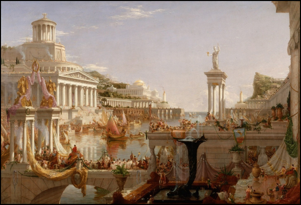

«Путь империи» — серия из пяти картин американского художника Томаса Коула, написанных в 1833-1836 гг.
В ней переданы чувства, распространённые в американском общество того времени, когда многие считали пасторализм идеальным этапом развития человечества, а идею империи ассоциировались с алчностью и неизбежным разложением. Коул неоднократно обращался к теме циклов — другим примером может служить его серия картин “Путешествие жизни”
Читать